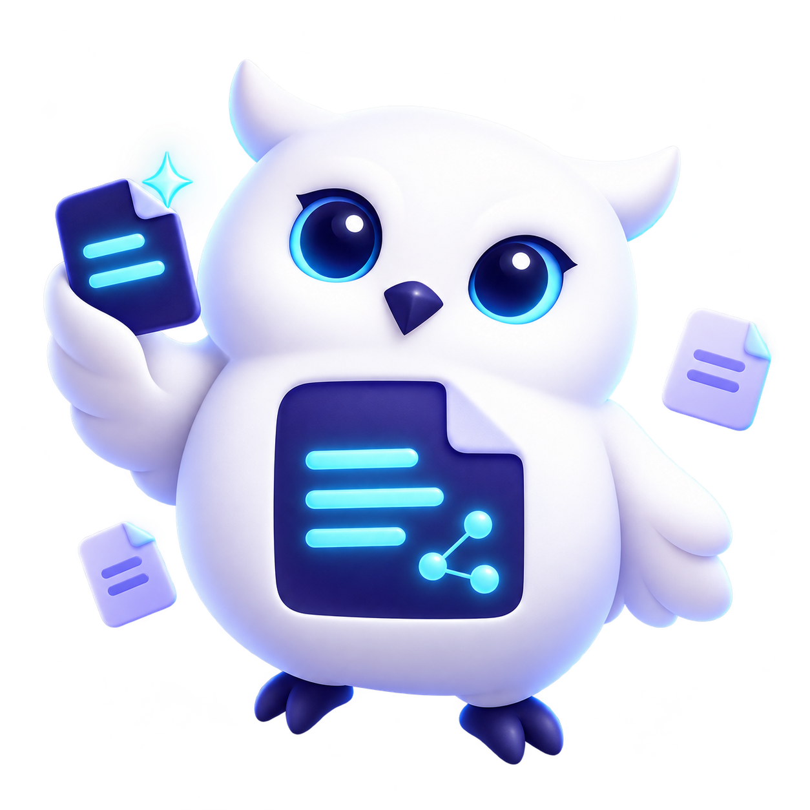
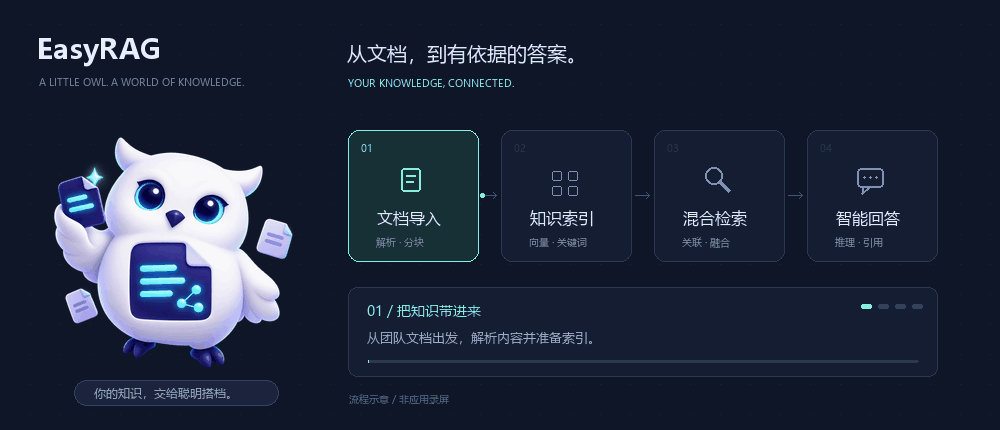

01
懂语义，也懂关键词
向量检索与 BM25 多路召回，融合排序与可选重排，从不同角度找到相关内容。
HYBRID RETRIEVAL你的知识库，多了一位聪明搭档。
把散落的文档连接成知识，让检索、推理与工具协作，
一起找到有依据的答案。

01 / MORE THAN SEARCH
文档不该只是被存起来。
让你的知识，参与每一次思考。
向量检索与 BM25 多路召回，融合排序与可选重排，从不同角度找到相关内容。
HYBRID RETRIEVAL提取实体与关系，构建知识图谱。沿着关联继续探索，让分散的文档互相连接。
KNOWLEDGE GRAPHReAct 按需调用工具，Deep Research 委派子任务。结合 Skills 与 MCP，扩展解决问题的方式。
AGENTS, SKILLS & MCP02 / A LITTLE SHOW & TELL
从日常知识问答，到多步任务研究。
一个工作空间，连接不同的思考方式。
交互内容为能力示意，未连接在线模型。
部署 EasyRAG 后可使用完整应用。
03 / FROM FILES TO FINDINGS

上传文档，本地解析或可选 MinerU 服务提取内容，分块后建立索引。
向量、关键词与图谱检索寻找相关证据，为回答准备上下文。
智能体按需调用工具、协同研究，通过流式对话呈现回答与来源。
04 / OPEN BY DESIGN
Vue 交互界面、FastAPI 异步后端与 LangGraph 智能体内核。
支持 OpenAI 兼容 API，按需选择模型与工具，部署在自己的环境。
# 01 获取项目
git clone https://github.com/reques/EasyRAG.git
cd EasyRAG
# 02 创建配置文件
cp .env.template .env
# 03 在 .env 填写模型 API Key 后启动
docker compose up -dhttp://localhost:5173首次启动需下载镜像与嵌入模型。Windows PowerShell 使用 Copy-Item .env.template .env 创建配置。
把知识留给自己，
把可能性交给开源。